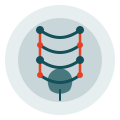
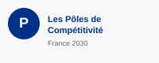
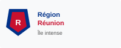
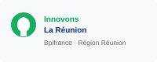
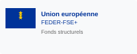

Moteur de l'innovation en bioéconomie tropicale, Qualitropic valorise la biodiversité terrestre et marine de l'Océan Indien pour créer des solutions durables et compétitives.

Qualitropic est le moteur de l'innovation en bioéconomie tropicale, valorisant économiquement la biodiversité tropicale terrestre et marine, alimentaire et non alimentaire, dans le plus strict respect de l'environnement. Basé à La Réunion, il fédère entreprises, organismes de recherche et formation pour développer des solutions innovantes et durables.
Exploitation durable des ressources naturelles terrestres et marines de l'Océan Indien.
Plus de 180 membres : entreprises, laboratoires, centres de formation et collectivités.
De la conception à la mise en œuvre, un suivi personnalisé pour chaque projet innovant.
Partenariats avec des acteurs de l'Océan Indien, de l'Europe et du monde entier.
La gouvernance de Qualitropic est assurée par un conseil d'administration présidé par M. Henri Beaudemoulin, directeur de PAT Zerbaz, garantissant une direction engagée et experte au service de l'innovation bioéconomique.
Directeur de PAT Zerbaz – Expert en développement économique et valorisation des ressources naturelles tropicales.
Composé de représentants des entreprises membres, organismes de recherche, établissements de formation et collectivités territoriales de La Réunion.
Vous avez un projet lié à la biodiversité et recherchez des partenaires clés ? Les experts de Qualitropic vous accompagnent de la conception à la mise en œuvre.
Notre équipe est à votre disposition pour répondre à toutes vos questions et vous accompagner dans le développement de vos projets innovants en bioéconomie.
Le KUB Bâtiment C
6 rue Albert Lougnon
97490 Sainte-Clotilde — La Réunion
Lundi – Vendredi : 8h00 – 17h00
Qualitropic bénéficie du soutien de financeurs majeurs tels que les pôles de compétitivité, la Région Réunion, Innovons La Réunion et l'Europe via le programme FEDER-FSE+.

Les Pôles de Compétitivité

Région Réunion

Innovons La Réunion

Europe – FEDER-FSE+